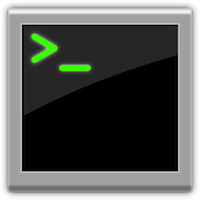
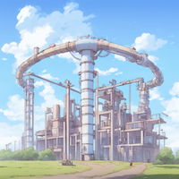
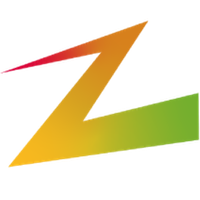
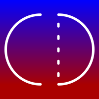
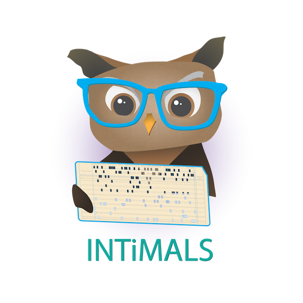
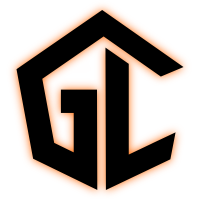
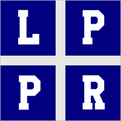

↸ BACK
return to the root

Pipeline
incentive-grant sponsored project about non-grading assessment (2024–2030)

Zorro
a large industrial-academic project; I do model-based system engineering (2023–2028)

an industrial PhD project with UCL and VUB (2020–2023)

an academic-industrial research project among RCL, UCL and VUB (2018–2020)

GrammarLab
foundations for a grammar laboratory, a Rascal project (2013–2015)

Language Parametric Program Restructuring
the project that hosted my PhD (2004–2008)
The page is maintained by
Dr. Vadim Zaytsev
a.k.a. @
grammarware
. Dim tiles refer to completed projects. See
copyright disclaimer
. Last updated: September 2024.